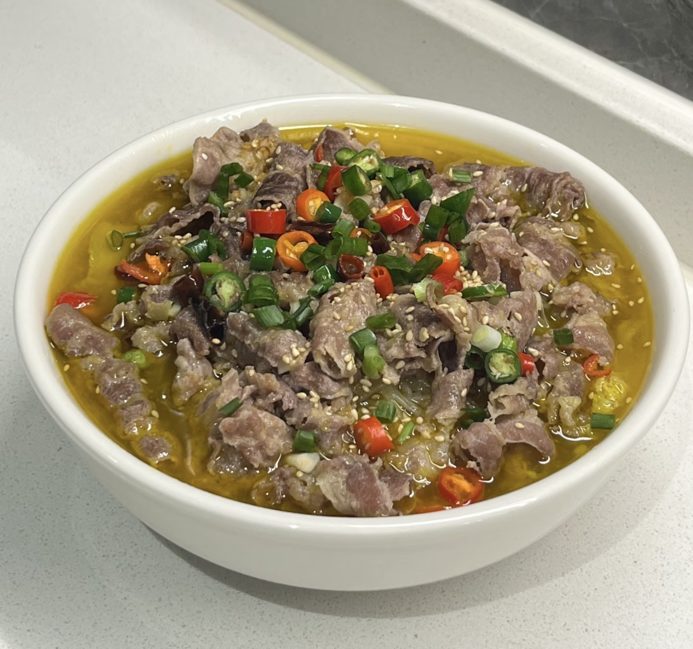
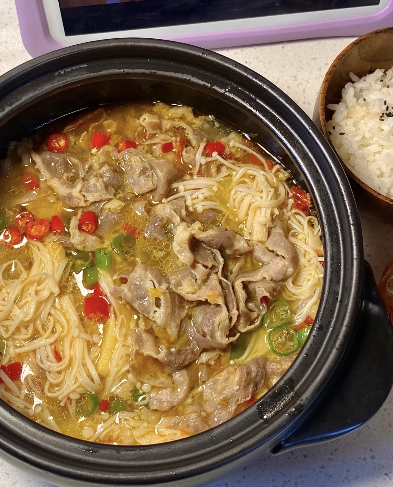

Sour Soup Beef
A spicy and tangy dish with tender beef and rich broth.
Ingredients
- Beef slices
- Enoki mushrooms
- Glass noodles
- Bok choy (optional)
- Garlic
- Ginger
- Chili sauce
- Vinegar
- Salt and sugar
- Cooking wine
- Oil
Directions
- Blanch beef and set aside.
- Soak noodles.
- Cook mushrooms briefly.
- Sauté garlic and ginger.
- Add chili sauce and cook.
- Add water and bring to boil.
- Season with vinegar, salt, and sugar.
- Add noodles and mushrooms.
- Add beef and cook briefly.
- Serve with vegetables.